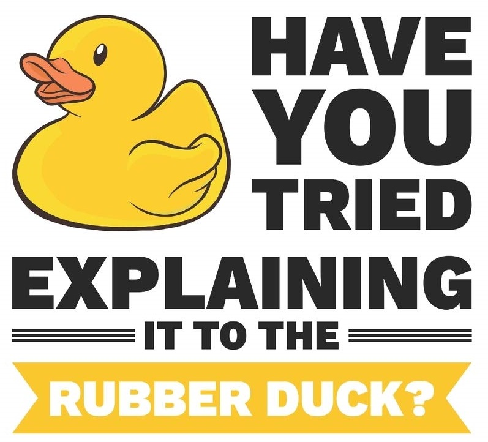

This blog post is a bit of a retrospective over my entire career as a software developer. Specifically, it covers the tips to self manage yourself, your team, and avoid silos. It is a guide to progress from junior developer to senior developer, to manager (should you choose that path). Every software developer must be able to self manage to be successful. At the same time, they need to collaborate with their team and avoid putting their self, or other team members in a knowledge silo.

My first professional software developer position was an internship while at university. That position wasn't at a software company. It was at a regular business where their products and services were not software. They had a few large software packages purchased and the IT and technical people to support them. They had some people that were decent with Excel and MS Access. But I was the only software developer. They needed me to write a few custom programs to fill in the gaps of their larger purchased systems.
I enjoyed the internship and learned a lot. What I did find disappointing was there a lack of a senior developer that could mentor me and that I could learn from. If I had a technical problem, I'd go to my non-technical boss for help and all he'd say is "I'm sure you'll figure it out". Annoying. After my internship and university was over, I wanted to make sure I found a job at a software company where I could learn from multiple senior software developers.
I made sure my next job was with a software company. There would be senior developers that could mentor me. My hope was that there would be people I could ask for help when I ran into a problem, and that they'd be able to help me.
Credit to my ability to self manage must go to my first software development manager. For my first job out of university, he was my boss. It said so on the organization chart he gave me on my first day. He was either the best boss I ever had, or the worst; to this day I'm not sure which. It is probably the former.
That Software Development Manager was strong technically. He had the same Computing Science degree that I had. Although he was my boss, he didn't work on the software product that I worked on. He wasn't even all that familiar with it. However, the organization chart said that if I had questions, I should go to him; so, I did.
Every single time (and I mean every single time) I went to him he would ask me 3 questions:
- What the problem is that you are having?
- What are the possible solutions?
- Of those possible solutions, which would you recommend?
And then he would end with, "OK, do that".
Rarely would he stray from that script. Occasionally, he might ask for a little extra explanation of the problem, or the pros and cons of the solutions, but not very often. Even if he did ask a question, it was never a leading question to guide me to the answer he wanted. It was always on me to come up with the solutions and evaluate their merit. And he never disagreed with my recommendation.
This was empowering (I guess), but mostly annoying. What I really wanted from him real answers to my very concrete questions. Not, answering my questions with more questions. I wished for some leadership, some direction.
I was mildly discouraged by my first two bosses. They lacked the technical or product knowledge to be able to answer all my questions. But I soon realized that having a boss or mentor that could answer every question I had wasn't necessary. It was also an unrealistic expectation; nobody will be able to answer all your questions.
What they did teach me was that I had all the tools I needed to answer my own questions. Despite them not giving me the answers, I was still able to solve the problem myself. It wasn't easy; it was often time consuming. But I did succeed on my own.
Later I came to realize was that this technique even had a name in software development circles: Rubber Ducking. Instead of going to my boss to ask these questions, I could just as easily ask a rubber duck. I'd get the same answers, and I wouldn't waste their time.
Instead of knocking on their door to ask my questions, I'd write an email instead. In the email I'd explain how I was blocked. I would speculate as to where the answers to my questions might be documented. I would suggest experiments I could run to help expand my knowledge on the subject. I'd put all of this in an email ended with the question "what should I do?" Before sending the email, I'd read it again. The answer to what I should try next to get over my hurdle became obvious. So, without sending the email, became my own mentor. I gave myself a clear path forward without having to bug my boss.
Although Rubber Ducking is an effective path to self management, everything must be done in balance. The danger of too much rubber ducking is the creation of information silos.
Each developer on the team is a good developer (probably). They can design and implementing solutions their selves, especially if they employ Rubber Ducking. This minimizes, and potentially eliminates, the need for boring, endless one-on-one and team meetings. That sounds productive, right?
The downside of Rubber Ducking is the lack of communication and collaboration. Each developer (along with their rubber duck) is working in their own silo. They are unaware of the work being done by other developers.
Siloed developers don't grok what other people are working on. They never build on the work of their teammates. They are much more likely to (re)write it their self. They introduce duplication in code, because they are unaware of others work, or they think they can just rewrite it better from scratch.
The key to breaking down information silos is effective collaboration. Again, there is a balance. Do collaborate, but you don't want to lock your team into endless meetings.
The emails you write to your rubber duck should be archived. Again, those emails should include multiple solutions, the pros & cons of each, and the entire design discussion. But don't actual "bulk send" the email to the entire team; it is doubtful anyone will read them. Do save them in the comments of the issue. This way the decisions made can be reviewed and collaborated on later.
Summarize your rubber duck analysis and invite the team to review as soon as possible. Communicate your reasoning quickly and effectively. Be engaging in your presentation style.
"Shift-left" the collaboration. In other words, engage in collaboration on an issue as early in the process as possible. The typical flow is there are multiple review steps in the life cycle of an issue. There is review of the requirements, design, code, quality assurance testing, stakeholder/sprint review, user acceptance testing, and final production rollout. Each of these review steps is an opportunity to collaborate. The earlier this collaboration is done the fewer silos there will be.
Although shifting-left the collaboration is the ideal, don't be afraid of change. Remember the Agile Manifesto, "Responding to change over following a plan" and "Welcome changing requirements, even late in development. Agile processes harness change for the customer's competitive advantage."
Encourage feedback. Invite debate. Even late in the process. Don't present the pros & cons weighted to the outcome you desire. You are not trying to win a debate. You are trying to encourage debate on what is best for the product.
When debating, try to build on the ideas (and the code base) of others. During the debate don't shoot down the new ideas presented. Nor, should new ideas shoot down the old ideas. If the old system isn't working well, try to enhance and fix it. Collaborate with the other developers with what they have built or are building. Remember that the goal of the debate is to collaborate on a common system, not to tear down other people's ideas.
Be sensitive to the time commitment of the review process on other teammates. Although it is fine to put a review requirement at various stages of the issue lifecycle, reviewers might not have the time to fully grok the changes being made. They may rubber stamp issues, but it might not be until a few days (or months) when they fully digest the scope, direction change, or can think up alternate solutions. This may allow for technical debt to leak into the system (it happens with all systems). Be open to change when it is noticed. Don't blame the review process.
Be aware of what other team members are working on. Give them some time to workout things on their own with their rubber duck, but don't let them spin their wheels either. If no progress is made over a few hours, then it probably time to ask someone else for help.
I hope this post helps members of software development teams work more productively and collaboratively. It is not black & white. A balance must be achieved. Hopefully I've highlighted some of the extremes and how they can be avoided.